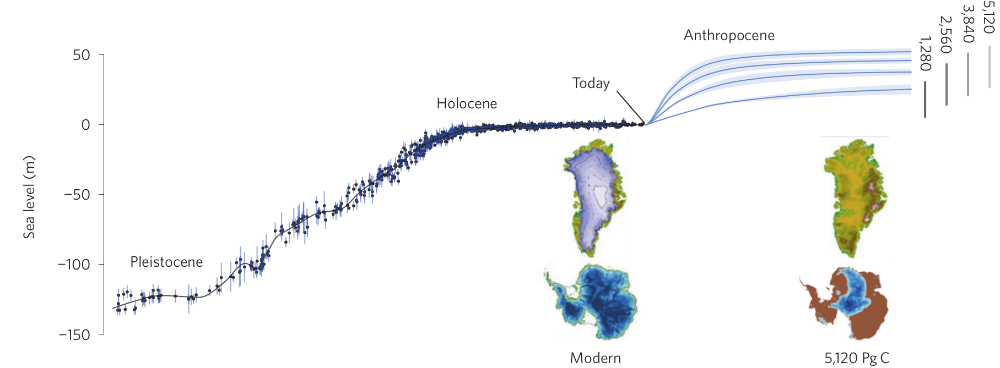
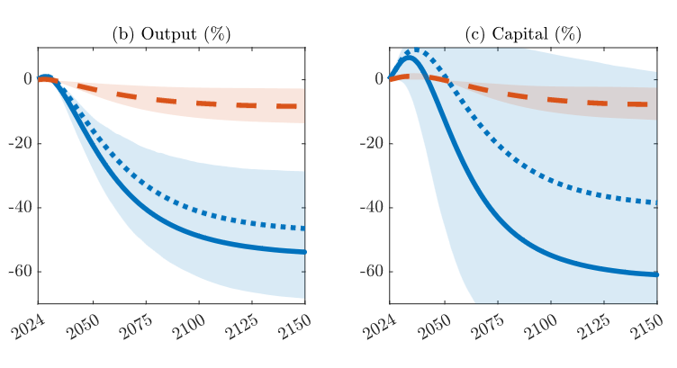
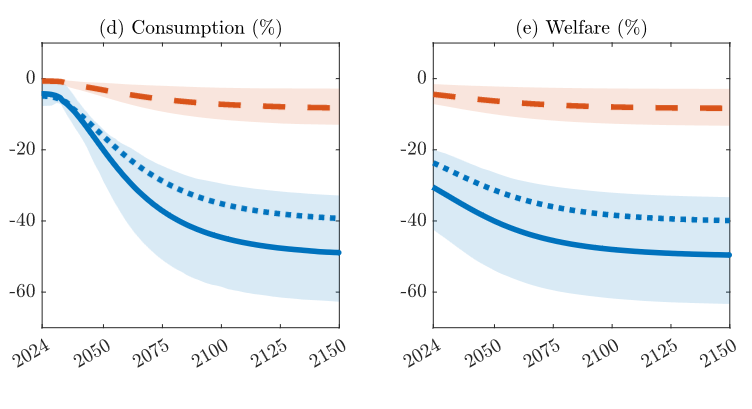
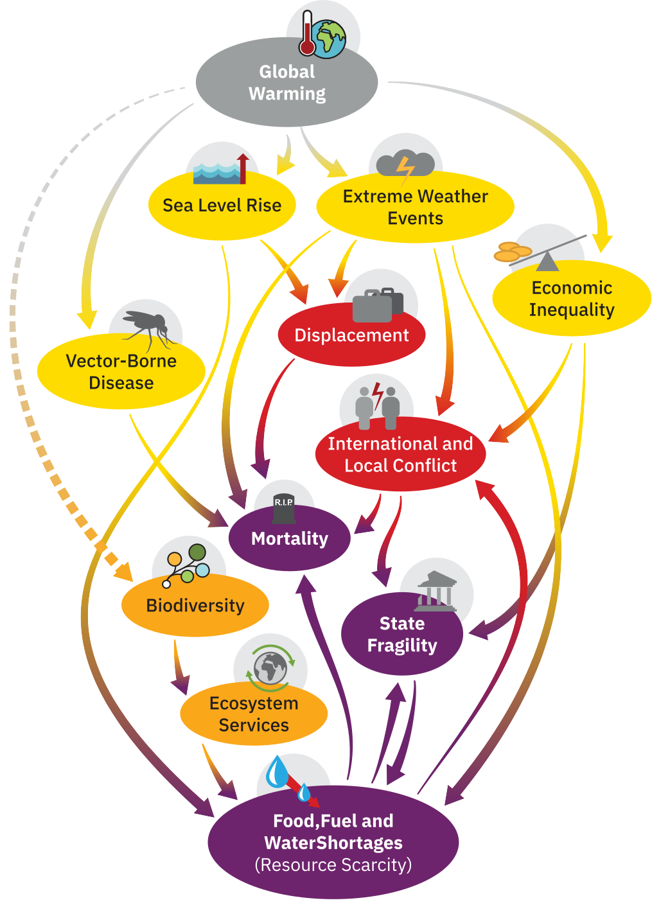
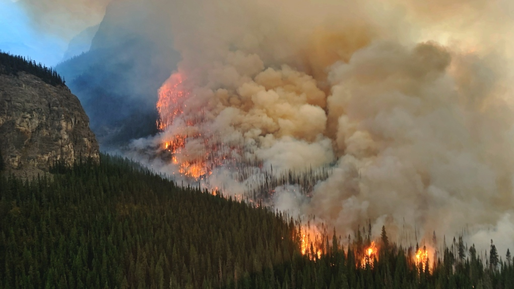
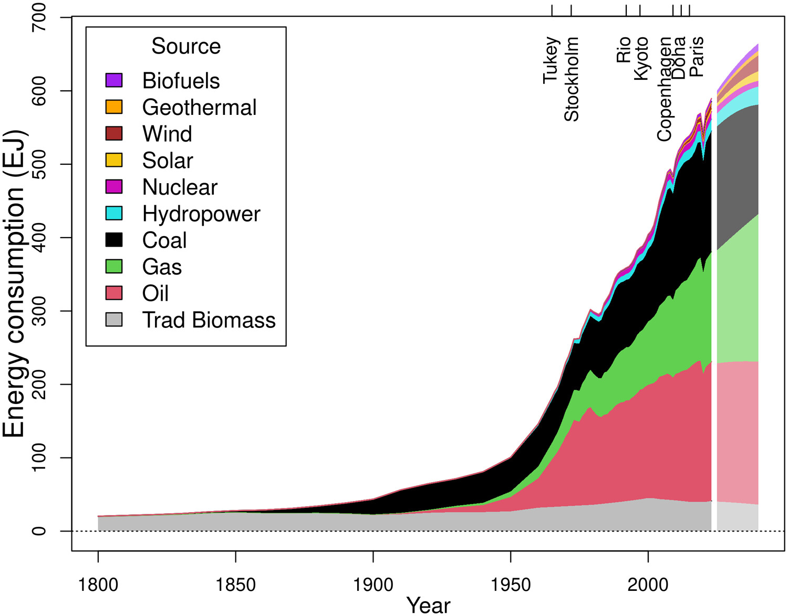

1°C warming may already have triggered some tipping points
positive feedbacks
up to 15 tipping points are now active
changes likely not proportional to warming
particularly worrying is a “tipping cascade”
strong, intrinsic, biogeophysical feedbacks difficult to influence by human actions
Potential massive global heating of ~7,5 °C
(the scariest scientific diagram ever…)
model predictions vary between ~2 °C to ~7,5 °C
even if we stop emitting now, CO2 concentrations remain high for centuries
Sea-level rise

Sea-level rise will be a reaction lasting for hundreds of years
Greenland ice sheet ~ 7m rise
West-Antarctic ice shield ~ 5m
Total Antarctic ~58m
Macroeconomic impact of global warming
 
a 1°C rise in global temperature causes global GDP to decline by 12%
31% welfare loss from a moderate warming scenario
“These effects are comparable to having a major war fought domestically, forever.”
Nhac Nguyen/AFP/Getty Images
Cascading global climate endgame

could global warming result in worldwide societal collapse?
a dangerously underexplored topic
extreme weather, water scarcity, explitation of resources, sea-level rise, breadbasket failures, famine, mass migration and mortality, inequality, regional and global conflict, systemic financial risk, systemic financial crysis, ecological collapse, failed states etc…
reinforcing “synchronous failures”
The responsibility of scientists and universities
Caution (not to be alarmists) has merits, but excessive reticence is dangerous
current approach is “err on the side of least drama” is irresponsible
“Prudent risk management requires consideration of bad-to-worst-case scenarios”
Are we scientists not complicit if we allow reticence to obfuscate the assessment of the situation?
“Facing a future of accelerating climate change while blind to worst-case scenarios is naive risk management at best and fatally foolish at worst.”

Green energy to the rescue?
“If net-zero targets are to be met, and global temperature rises held to below 2 °C, the rate of deployment of clean power sources will need to accelerate 100-fold … within the decade.”

Global energy consumption
A Global Futures Initiative for Heidelberg
thinktank/institute, research/teaching in areas related to:
catastrophic risks
deep cuts in greenhouse gas emissions
enhancement of biosphere (Half-Earth principle of E.O. Wilson)
CO2 removal from the atmosphere
possibly solar radiation management
adaptation to warming, improve resilience
new economic models to tax externalities (extraction and waste)
more resilient democracies
global cooperation
effective Earth System stewardship
…
Acknowledgements
Sanja Jasek
Alexandra Kerbl
Emily Savage
Simone Wolters
Lara Keweloh
Kevin Urbansky
Karel Mocaer
David Hug
Benedikt Dürr
Ira Maegele
Emelie Brodrick (Exeter)
Former lab members
Kei Jokura, Luis A. Bezares-Calderón, Luis A. Yanez-Guerra, Victoria Moris, Daniel Thiel, Albina Asadulina, Cameron Hird, Adam Johnstone, Markus Conzelmann, Nadine Randel, Philipp Bauknecht, Martin Gühmann, Cristina Pineiro-Lopez, Nobuo Ueda, Aurora Panzera, Csaba Verasztó, Elizabeth Williams


 Emelie Brodrick
Emelie Brodrick
 Emelie Brodrick
Emelie Brodrick